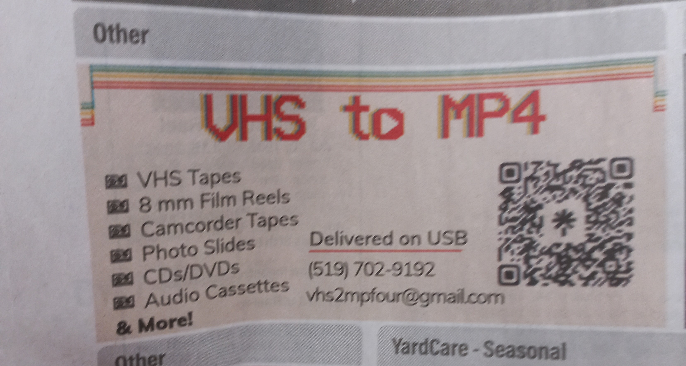
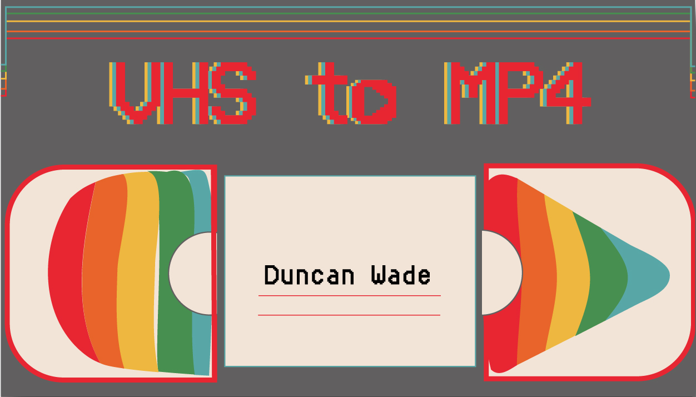
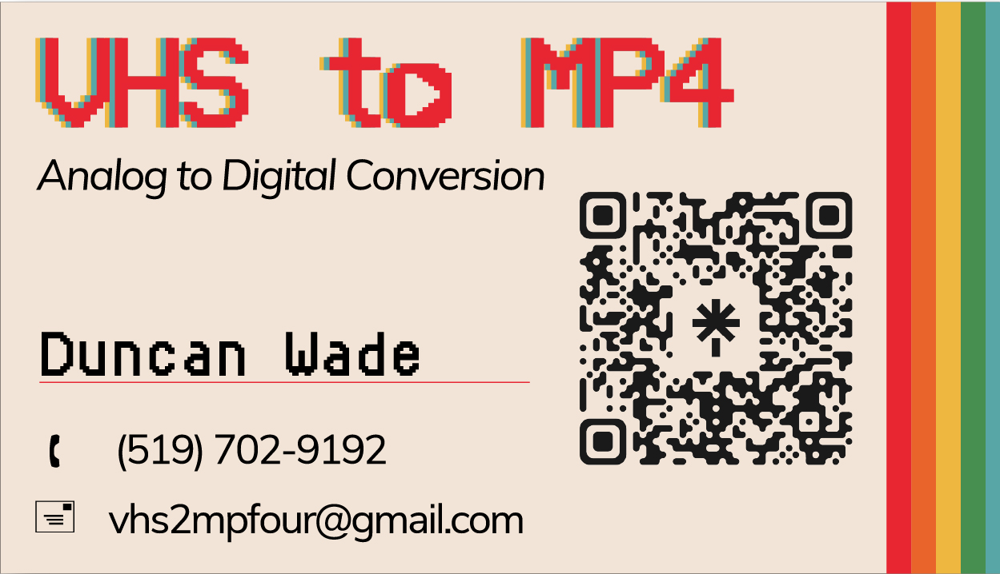
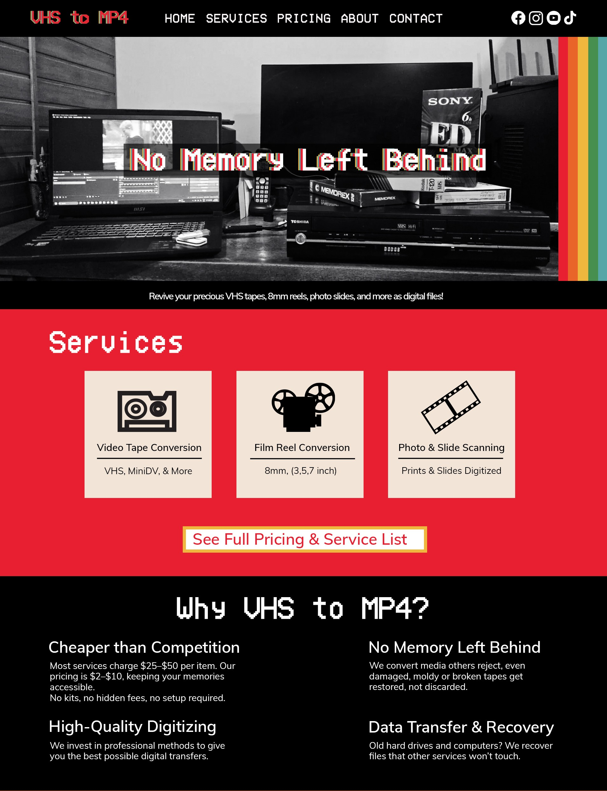
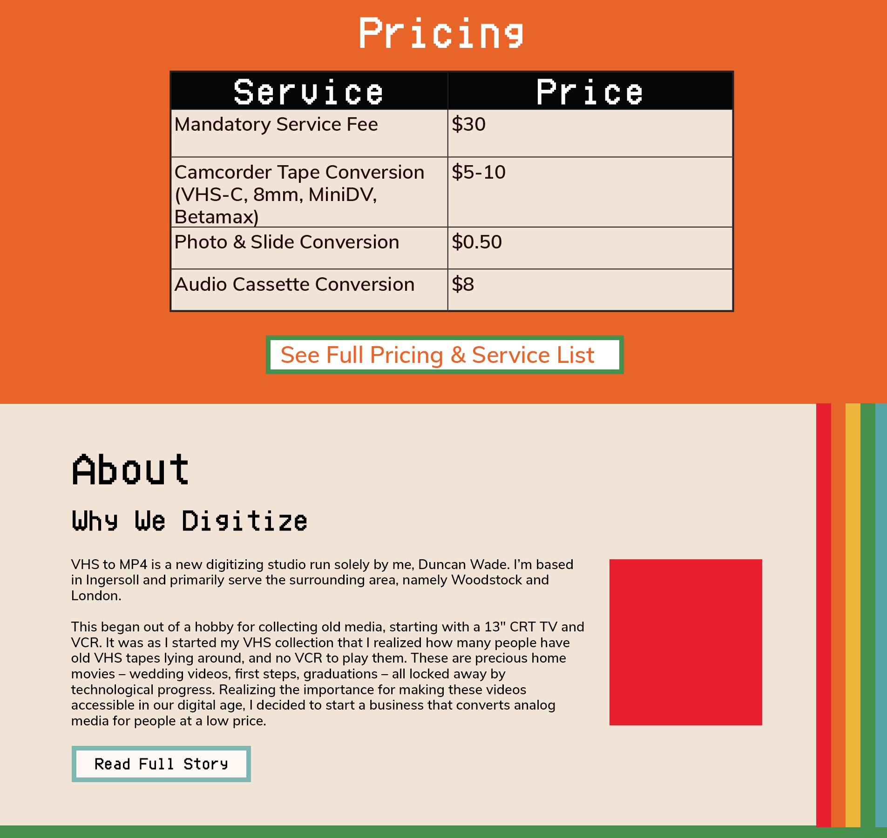
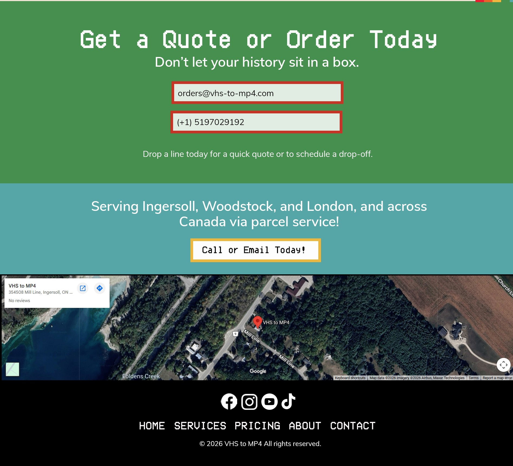

VHS TO MP4
Branding, visual identity, concept development, and promotional materials.
VHS to MP4 is a tape conversion service, taking old memorabilia and turning it into easily accessable files on a USB stick. The goal for this client-driven project, was to create a cohesive brand identity, accomplished by creating a colour pallette that reflected the vintage, and almost pshychedlic era of VHS and cassettes, with a new modern spin. This inluded pairing a sans serif text with a pixalated retro font, and incorperating a black and white, high contrast editorial feel to the neon rainbow of the past.
The client had prepared a logo of their own, which I included below. They wanted to incorperate the roll of tape feel on one side, and the modern play button on the other side, as seen in the stand alone icon I created for them. However, they found the brand would be most recognizable by a word mark, and when presented with a few options, were fond of the pixalted text in three brand colours, along with the play button shape inside of the O counter.
Once my newspaper design ad was a success, printed and run for 8 weeks in the London Free Press Saturday Edition, I recieved another call from the client, asking if I would help him design a static mockup for his business site, along with a web ad. Something that reflected his company, captivated and held the attention of his customer audience, and simutaniously, was Search Engine Optimized.
@3x-100.jpg)








